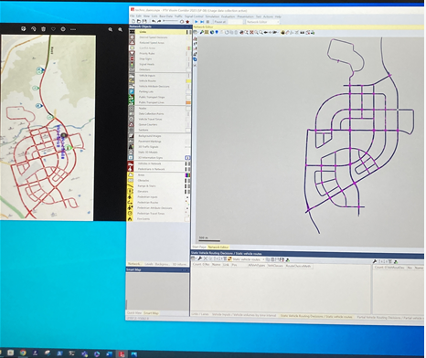
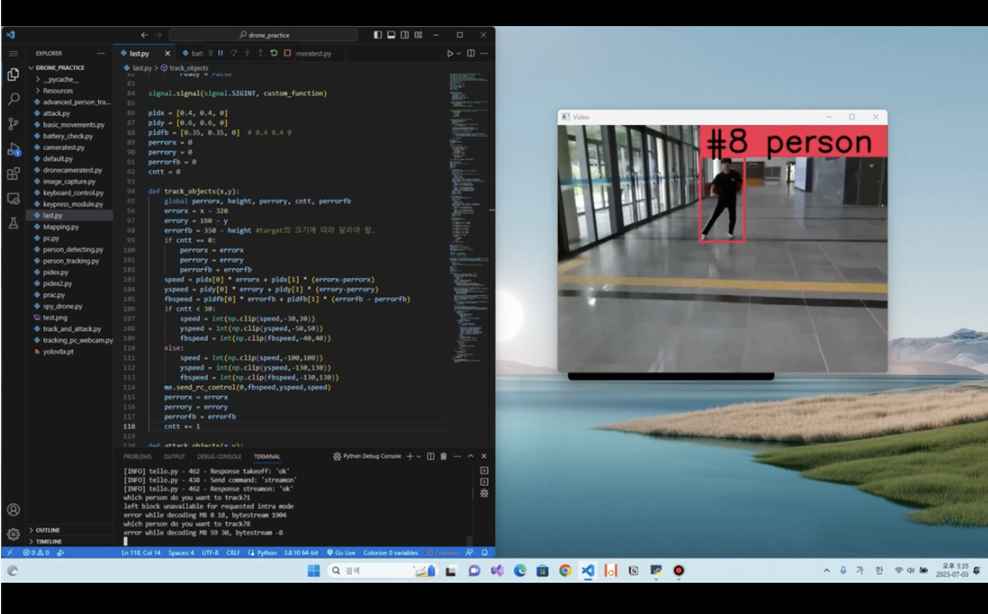

About Study Topic
1. 3D Visualization Tools
For example, let's say that you have developed an algorithm for autonomous network communication between 100 autonomous vehicles.
Your algorithm may be wrong, so you'll have to run an experiment to see if it actually works.
However, purchasing 100 cars on the budget of the lab will not be easy for any lab in the world.
What is needed in this case is 3D visualization tools and simulators.
Anyone who encounters a simulator for the first time can think of it as a boring and difficult topic.
But these simulators are very similar to game engines, and I also actually studied game engines, and I can have fun studying while making games.
Unity, one of the most well-known simulation tools, is also a game engine.
After studying hard for a month, you will find yourself doing simulations freely.
If you go to the students' personal page in the upper right, you can see several projects conducted with the 3D Visualization Tool.
2. Traffic Simulators

Of course, you can do most of the simulations with game engines like Unity and Unreal engines,
Sometimes, if you want to simulate about special topics, it will be easier and faster to do simulations in that field.
VISSIM and SUMO are specialized for conducting traffic flow simulations.
With these simulators, you can easily create your own custom roads and simulate traffic flow by placing your car
in a specific location at a specific time. You can also download the simulation results im Excel, so you can easily analyze them using Python.
Because of these advantages, as you can see in the right picture, Saneun is desining roads aruond Hyenpung using VISSIM and simulating traffic flow.
3. Microcontrollers
Microcontroller is a small,cheap computer.
We can put several operating systems such as Windows and Linux on this computer to study about the several operating system.
In addition, RC CAR and Drone which can do complex tasks consist of combination a Microcontroller, sensor and motor.
In order to move this drone or RC car, you have to run Python or C-CODE on the microcontroller to move the motor,
just as we can run the code on the computer and make the sound on the speaker.
Therefore, by using and studying Microcontrollers, we are familiar with excuting several codes on microcontrollers,
and then It means easily to handel advanced RC Cars and Drones.
It helped me a lot to be able to use the microcontroller comfortably when I was actually working on projects related to RC CAR and Drone.
4. Drones

In modern times, drones have been developed so easily for programmers to use.
With just one laptop, you can control the drone freely. All you have to do is connect your laptop to the Wi-Fi that the drone creates,
and use Python to control the drone freely. These drones also have built-in cameras,
which allow you to read images in real time through the cameras and conduct several computer vision projects that move the drones according to the images.
For example, as you can see in the right picture,
I run a project that "Creating a Drone that follows certain object we want" using Object tracking technology.
5. RC CAR and Mini Autonomous car
With RC cars with built-in cameras and ultrasonic sensors, you can do many interesting projects.
The color sensor enables line tracing and camera enables several Computer Vision projects.
You can also experience the need for the control algorithms by conducting several projects for autonomous driving.
I could get a lot of experience making line tracing and person tracking RC CAR.
6. Stereo Camera
With a stereo camera, you can convert images taken with one camera into 3D. This enables better object detection and tracking.
If you use this, you can do projects such as analyzing indoor of certain buildings using drones.
7. VR/AR Equipment and Driving Simulators with Unity
Don't you want to go into the virtual environment created using Unity as if it's actually the world I live in? These devices make it possible.
If you conduct research using virtual environments and present it at a conference later,
producing videos or presentations using these devices will be very helpful for lively presentations.
8. High-Performance Servers, Optimization tools
Even if you create a website, you have to use a server to actually run it on the web.
Also, if you need a lot of computation while working on a computer vision project, it will be very helpful to use a GPU server.
The experience of dealing with servers directly will be a very special experience and will help you grow into a programmer who can do more.
Almost all of the research in computer science is to solve the optimization problem.
For example, when you run a heavy program in an autonomous vehicle,
there are optimization problems such as deciding how much to calculate on the server and how much calculate on the computer in the car.
These problems can be solved more easily using the various optimization tools that you can see in the figure on the right.
If you handle optimization tools well, you will be able to grow into a good researcher with a wider range of research.
9. Learn how to read and analyze research papers.
For an undergraduate resercher, a research paper will only feel difficult and hard.
Also, you won't know why you should read the research paper.
Before We learned how to analyze research paper, We also had no idea how to read a paper and what We could get if We read paper well.
In the HASS lab, you can learn from your professors how to read and analyze papers regardless of the field.
Through this, We have an experience of getting ideas and solving various problems that arise while working on the project by reading the research paper.
Project No.5, which is posted on the project Introduction page, was also succesful with ideas from an IEEE research paper.